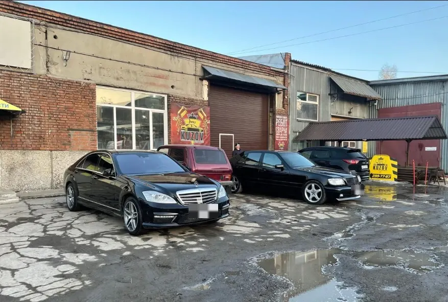
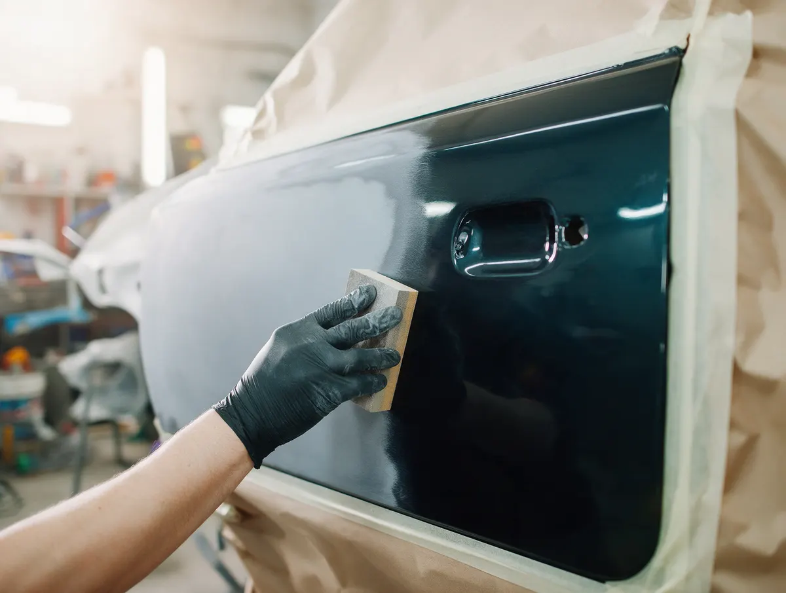
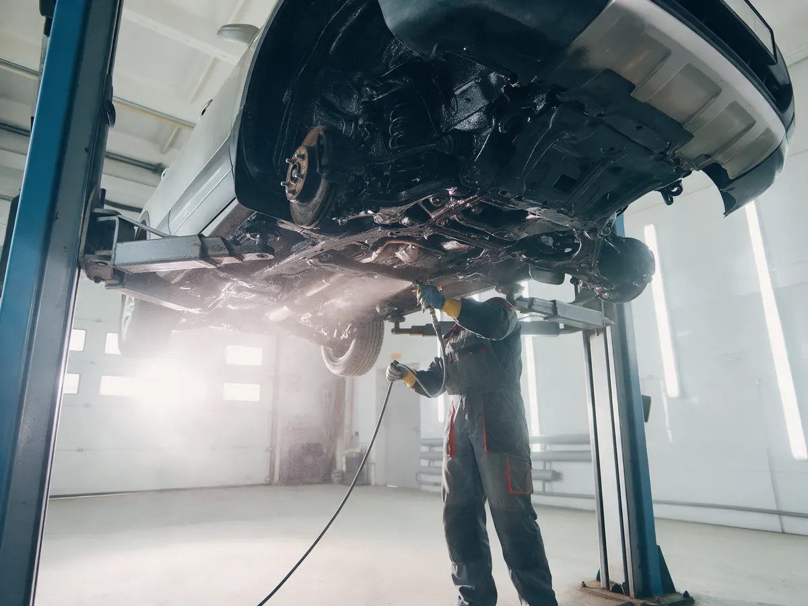
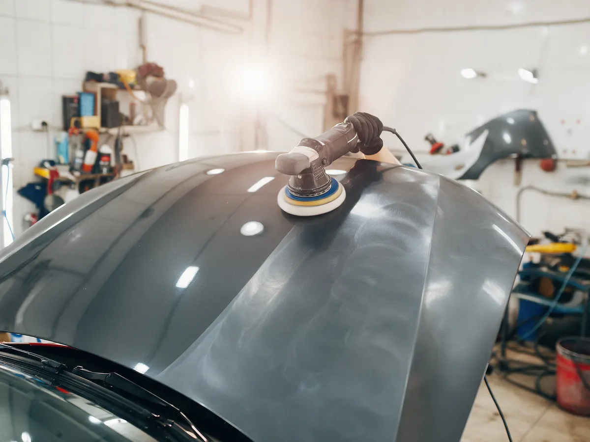

Pro kuzov
Автосервис: кузовной ремонт (восстановление геометрии, покраска, полировка, ремонт вмятин, сварка) с гарантией! Антикор
- Рейтинг 4,9 в 2ГИС по 247 оценкам, 173 отзыва
- Улица Мира, 58а, ежедневно 09:00–20:00
- Оплата картой, наличными, переводом и через банк

Что рядом с ремонтом
Входит
- Кузовной ремонт с гарантией – на карточке указано «от 6 месяцев»
- Покраска в камере, сварка, восстановление геометрии на стапеле
- Антикор кузова и рамы, пескоструйная очистка
- Ремонт ходовой и выхлопных систем, автостёкла, автооптика
- 4 парковки рядом, доступный вход, доставка
Отдельно, если нужно
- Итоговая цена ремонта зависит от автомобиля и объёма работ
- Стоимость ремонта называют после осмотра
Услуги и цены
Цены с карточки в 2ГИС, обновлены 14 мая 2026. Точную стоимость называют после осмотра.
Покраска и сварка
- Покраска элемента в камерезависит от цвета и размера12 000–20 000 ₽
- Замена порогаремкомплектом или по заводским точкамот 25 000 ₽
- Замена аркиот 25 000 ₽
- Ремонт вмятинуточнить
- Восстановление геометрииуточнить
- Полировкауточнить
Антикор
- Мойка днища со снятием защит и подкрылок5 000 ₽
- Антикоррозийная обработка кузовачастичнаяот 15 000 ₽
- Пескоструйная обработка днища и рамыот 40 000 ₽
- Антикор рамы внедорожникаот 40 000 ₽
- Снятие кузова с рамыот 60 000 ₽
Цены взяты с карточки в 2ГИС. Остальные работы – уточнить.
Четыре шага от записи до выдачи
- 01
Записались
Позвонили или написали в мессенджер, назвали марку и что случилось.
- 02
Осмотр и смета
Мастер осматривает автомобиль, согласует список работ и сроки.
- 03
Ремонт
Работы идут по этапам, по отзывам клиентов – с видео и фото отчётами.
- 04
Выдача
Забираете машину и проверяете результат.



Что говорят клиенты
Видео и фото отчёты
«Все грамотно с видео/фото отчетами на каждом этапе работ» – из отзыва в 2ГИС.
Быстрее срока
«Планировали сделать за 3 дня, в итоге забрал уже через 2» – из отзыва в 2ГИС.
Не берут лишнего
«Здесь с тебя не пытаются взять лишнего, весь список работы был согласован четко по делу» – из отзыва в 2ГИС.
Берут в работу сразу
«В работу взяли в тот же день, как привёз авто» – из отзыва в 2ГИС.
Отзывы с 2ГИС
«Сделали антикор на Kia Sportage. Все грамотно с видео/фото отчетами на каждом этапе работ. Планировали сделать за 3 дня, в итоге забрал уже через 2. Спасибо ребятам!»
Sergei I. · 9 ноября 2025
«В работу взяли в тот же день, как привёз авто. Через три дня забрал готовый результат. Спасибо за оперативность и профессиональный подход!»
Дмитрий Слепов · 21 ноября 2025
«Очень порадовало, что здесь с тебя не пытаются взять лишнего, весь список работы был согласован четко по делу, еще и фары в подарок отполировали.»
Илья Филиппов · 22 ноября 2025
Отзывы с карточки в 2ГИС, дословно.
Частые вопросы
Как записаться?
Позвоните по телефону +7 913 917-77-57 либо напишите в WhatsApp или Telegram.
Где вы находитесь?
Новосибирск, Улица Мира, 58а, Кировский район. Рядом 4 парковки.
Какая гарантия?
На карточке указана гарантия от 6 месяцев. Условия уточняйте при записи.
Когда вы работаете?
Ежедневно с 09:00 до 20:00.
Запишитесь на удобное время
- Адрес
- Улица Мира, 58а, Новосибирск
- Часы
- Ежедневно с 09:00 до 20:00
- Телефон
- +7 913 917-77-57